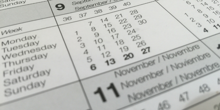
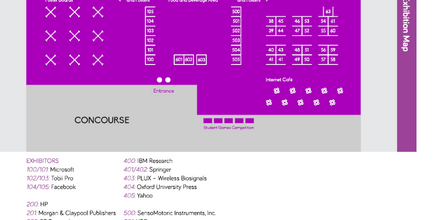
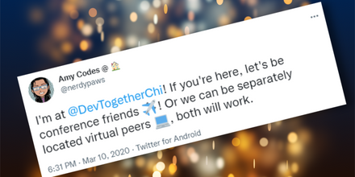
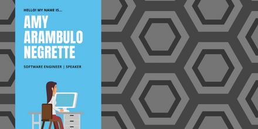

In the spring of 2019, I spoke at five events in three months including APItheDocs, AWS Summit, Revolution Conf, AWS Community Day, and PearConf, all differing in size and target audiences. During this time, I also participated in partner meetings on behalf of my company and had to go to a family funeral. Unfortunately, I have a moderate level of social anxiety which meant I simply did not have the internal bandwidth to handle all of these days Outside. Sometime between RevolutionConf and AWS Community Day, my body just gave in. I had the motivation but I barely had any energy to move around and handle my family’s needs, much less draft more slides.
This rigorous schedule did allow me to try out different things so that I could get the most out of any given event while still maintaining the boundaries I needed for myself.

One of the issues I had this Spring was I submitted far and wide. Of course, it completely escaped me why they call it Conference Season, as in many happening at the same time. So I ended up withdrawing several submissions as others started to get accepted. I unfortunately did not realize that they would basically also fall one week after another after another. If you need more than a few days to rest, make sure you check the dates accordingly and withdraw when you need to.

Large conferences will usually release maps prior to the event. Make sure to cover your needs prior to the event itself. Where are there bathrooms? Food? How many sessions can you effectively get to? If you need a break, where would you go? How do you get to and from the event? You don’t necessarily need to remember most of this, but it’s good to have it noted down somewhere for reference. Anything you can’t answer and feel you need answers about, absolutely contact the event organizers. They’re there to help you.
Also, especially true for the times we live in, confirm the local Covid-19 protocols for the event. Even if the city the event takes place in has lax rules as far as masks and vaccinations, the event venue or the event itself may have more strict rules all together. There may also be areas where one can take a mask break or sanitizer stations.
I never go anywhere without a laptop, even when I’m not working. I’ve tried using a tablet but I need a keyboard in order to be effective. This naturally differs from person to person, but generally you should make sure whatever devices you do carry are charged (such as your phone), that you stay hydrated and fed, and that you bring anything that calms you down. Also deodorant, because conferences are crammed with people and smells rub off.
My checklist looks like this:

I’m not good at socializing. I love it when people come up after talks so we can chat, but sometimes I have to run off due to a blood sugar crash or an anxiety attack. Thankfully, I’m on a handful of Tech Industry Slacks. To prevent myself from simply doing my talk and leaving, or burying myself in a corner of a breakout room for four hours, I set up a Conference Buddy ahead of time. I ask around to see who’s going to be at the event I’ll be at and meet up with them during a lunch or coffee break. This way I can meet people outside of work and get their take on how the event is going or if there’s a specific session I should go see.
Overall, this will make the events less daunting, as I’ve removed my well-known anxiety triggers out of the equation. So long as I give myself enough time to recuperate, I am able to get the most out of an event, even when it’s difficult for me to be there. Of course, the price of not giving yourself enough time is emotional exhaustion halfway through.

I meet a lot of people at these events, either through the Hallway Track, after my talks, or through friends of friends. In that moment, I remember no one. If remote life has taught me anything, it’s that I’ll only remember a person’s face if I see them weekly with their name directly under them. Barring that, on every slide is my twitter handle and sometimes my LinkedIn. This allows anyone at my talk to message me to say hi or reference my work.
But that’s one hour, maybe, out of the entire time I’m there. I also have contact cards as well as a discord people can add, allowing people to contact me however they feel is most convenient.
I hope these tips help you out! I know they’ll help me when I have to do it all again.